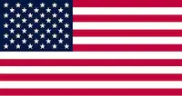

Daniel Rivard
About me
My name is Daniel Rivard. I am a BYU student through the Pathway program. I live in Virgina and have three cats. I spend the majority of mu time trying to understand what I'm learning, but I also enjoy playing games with my friends and practicing drawing.
The United States of America
The United States of America, commonly known as the USA, is a vast and diverse country located primarily in North America. It is made up of 50 states, a federal district, and several territories, stretching from the Atlantic Ocean in the east to the Pacific Ocean in the west. Known as a global leader in politics, technology, culture, and economics, the USA has a strong influence on world affairs. Its population is a blend of many ethnicities and cultures, making it one of the most diverse nations on Earth. The country is built on democratic principles, valuing freedom, equality, and opportunity, which are central to its identity. With iconic landmarks such as the Statue of Liberty, the Grand Canyon, and the White House, the USA is not only a political and economic powerhouse but also a hub for tourism and innovation. Its history, shaped by both struggles and achievements, continues to play a key role in defining the nation’s character and its role on the global stage.